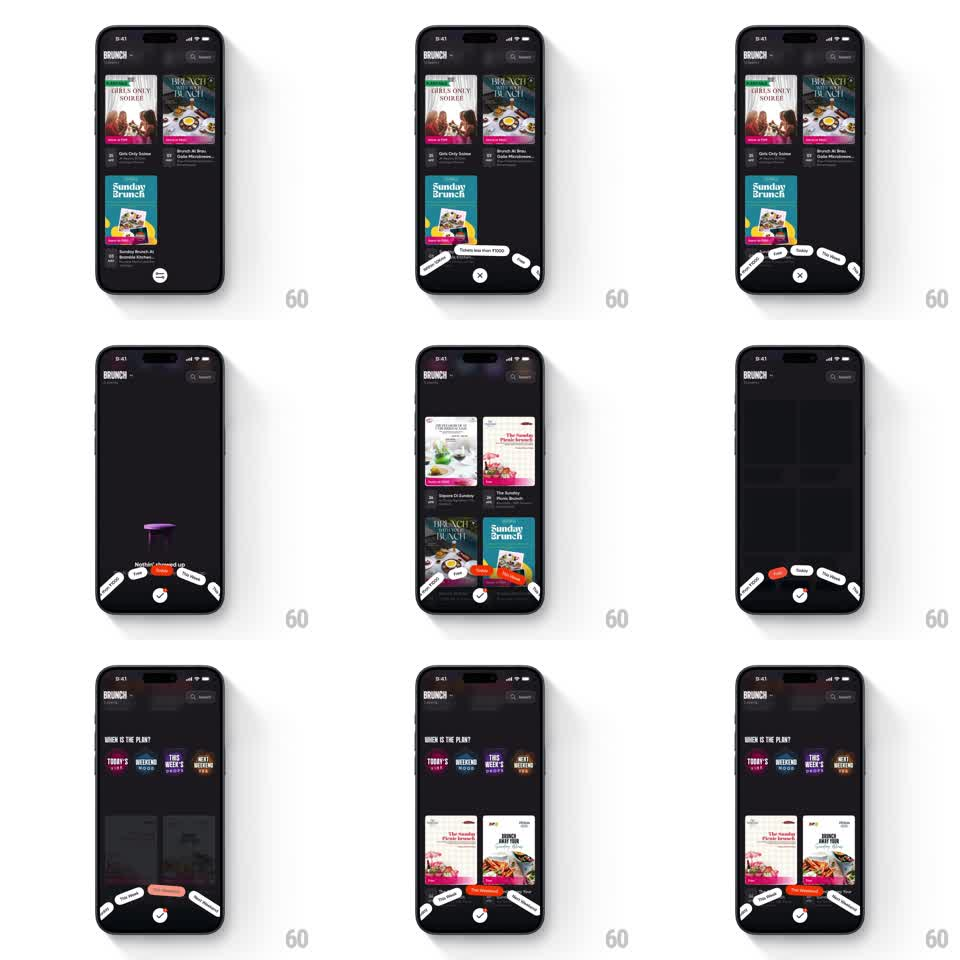

Media
Frame-by-frame

Rebuild this interaction 1:1: Swiggy Scenes' circular filter menu - a bottom pill fans out into an arc of vibe chips (Booze?, Rooftop?, Candle lit?, Date Night...), and picking one filters the scene grid with a staggered repopulate.

Rebuild this interaction 1:1: Swiggy Scenes' circular filter menu - a bottom pill fans out into an arc of vibe chips (Booze?, Rooftop?, Candle lit?, Date Night...), and picking one filters the scene grid with a staggered repopulate. ## Integration Integration: stack-agnostic spec - springs given as stiffness/damping, timed motions as duration + curve; map every value to your framework and animation library of choice. ## Scene Swiggy Scenes, dark: "BRUNCH" header with search/sort icons, a two-column grid of scene cards (Girls Only Soiree, French Brunch, Sunday Brunch), and a pill button bottom-center. Opened: chips fanned along a bottom arc around a round close/confirm button. Filtered: a red-tinted active chip, a "WHEN IS THE PLAN?" chip row under the header (Today's, Weekend, This Week's, Next Weekend), and a grid that can empty to "No matches found yet" with a small illustration. ## Motion spec Pattern: radial fan-out filter menu from a bottom anchor. - Tap the pill: chips spring out along a semicircular arc (rotate from the bottom-center pivot, each chip swinging to its angle with spring ~350/18, 50ms stagger, slight overshoot); the pill morphs into the round close button (label collapses, 200ms). - Chips land tilted along the arc's tangent, not level. - Tap a chip: it fills with its accent color (200ms), the unchosen chips swing back in (reverse stagger), and the grid fades out (150ms) then repopulates card-by-card (scale 0.92 -> 1 + fade, 60ms stagger). - On an empty result, the grid yields to the "No matches found yet" placeholder, which fades up (250ms) with its illustration bobbing gently (translateY +/-4px, 1.6s loop). - With a filter active, the "WHEN IS THE PLAN?" chip row slides in under the header (translateY -12 -> 0, 250ms). ## Calibration - The arc is shallow - a friendly fan, not a wheel; chips stay legible with at most +/-20 degrees of tilt. - The active filter chip keeps its accent fill and sits slightly raised in the collapsed pill state. ## Reduced motion Chips fade in along the arc without rotation; grid crossfades (200ms) without per-card stagger. ## Don't miss - The fan opens around the center button - the pivot stays fixed, so the motion feels like a hand fan. - Empty state keeps the arc open; filtering never traps the user on a dead screen.